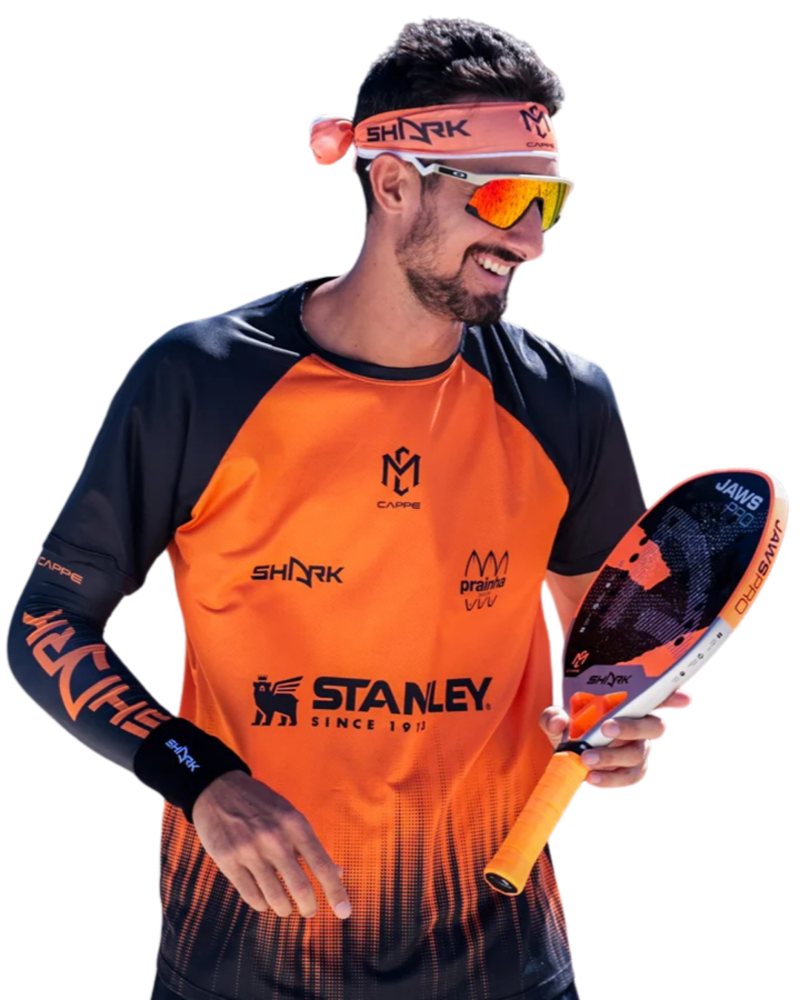
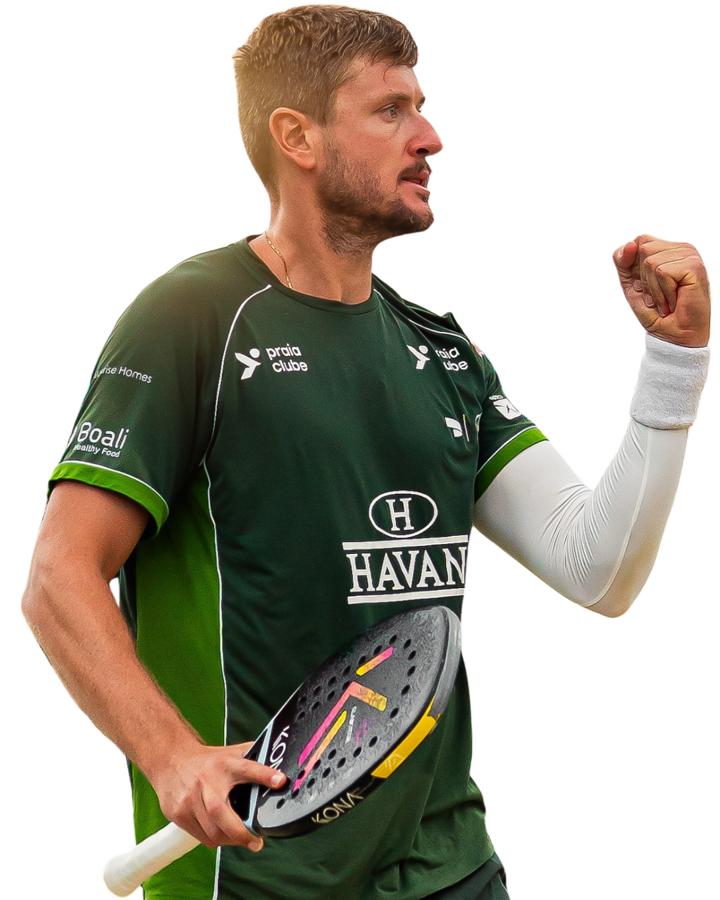
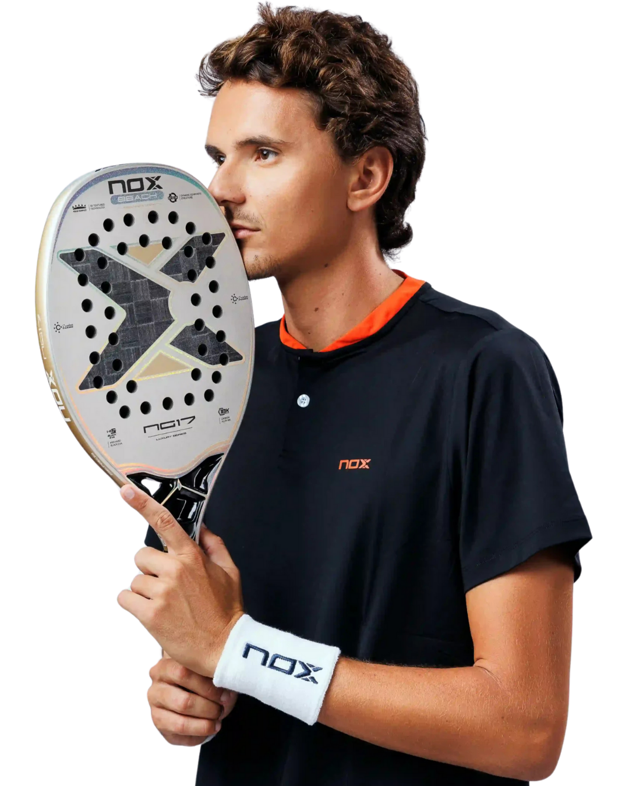

Ranking ITF Masculino de
BEACH TENNIS

Michelle Cappelletti
Ranking ITF: 1
Michelle Cappelletti 
Ranking ITF: 1

André Baran
Ranking ITF: 2
André Baran 
Ranking ITF: 2

Nicolas Gianotti
Ranking ITF: 3